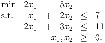
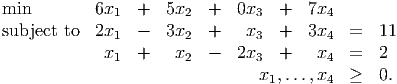
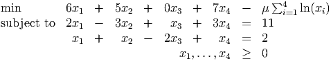
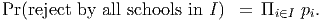
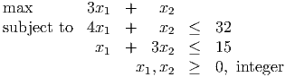
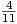
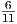

Math Models of Operations Research, MATP 4700/ ISYE 4770.
Third Exam, Friday, December 10, 2010.
You may use any result from your notes or a homework that is clearly stated. You may use one sheet of
handwritten notes, but no other sources. The exam consists of five questions, and lasts one hundred and ten
minutes.
- (30 points; each part is worth five points) Consider the linear programming problem

(Note: Keep the constraints as inequalities throughout this problem, so don’t introduce slack variables. An
interior point must satisfy all the constraints strictly.)
- Solve the problem graphically.
- Determine the direction Δx of most rapid improvement in the objective function. Is this direction
feasible at any interior point solution to the model?
- Show that x = (2, 1) is an interior point solution.
- Determine the maximum step α in the direction Δx from the point x0 that preserves feasibility.
Let x1 = x0 + αΔx.
- Plot the move of part 1d and the resulting point x1 in the graph of part 1a.
- Explain why it is easier to find a good move direction at x0 than at x1.
- (15 points) Use Dijkstra’s algorithm to find the shortest path from node 1 to node 5 in the given graph. The
labels on the edges are the lengths of the edges.
- (10 points) The point x = (3, 1, 2, 2) is an interior feasible solution to the linear program

Show that x is not an optimal solution to the barrier problem

when μ = 6. (Hint: the dual problem to min{cT x : Ax = b,x ≥ 0} is max{bT y : AT y ≤ c}.)
- (15 points.) Jim is deciding which graduate schools to apply to. He is choosing between n schools. He has
determined a value vi to him of each school, and his objective is to maximize the sum of the
values of the schools to which he applies. He has also determined the probability pi that he is
rejected by school i, and he has assumed these probabilities are independent. He can afford
to apply to 5 schools. He wants to ensure that the probability that all 5 schools reject him
is no larger than 0.05. Express his problem as an integer program. (Hint: Let I be the set
of schools Jim applies to. The probability that he is rejected by all the schools he applies to
is

Think about logarithms.)
- (15 points) ABC Resorts give their guests souvenir boxes of chocolates, which they order from a supplier.
Each item costs $3 and there is a delivery charge of $50. They want to plan their deliveries for the next three
weeks, when they forecast the demand to be 20, 40, and 30. They can order extra boxes, but those need to
be refrigerated, at a cost of $1 each per week. Show that this problem can be approached by dynamic
programming, with states k = 1,…, 4 representing the reaching of week k with all earlier demand fulfilled and
no inventory on hand. Sketch the digraph corresponding to the dynamic program structure. Include costs on
all arcs.
- (15 points) The integer program

is illustrated, with the feasible region for the LP relaxation shaded. The optimal solution to the LP
relaxation is x = (7, 2). Find a linear constraint that is satisfied by all feasible solutions to the integer
program but is violated by x. What is the optimal solution to the LP relaxation with your additional
constraint (solve the LP graphically)?